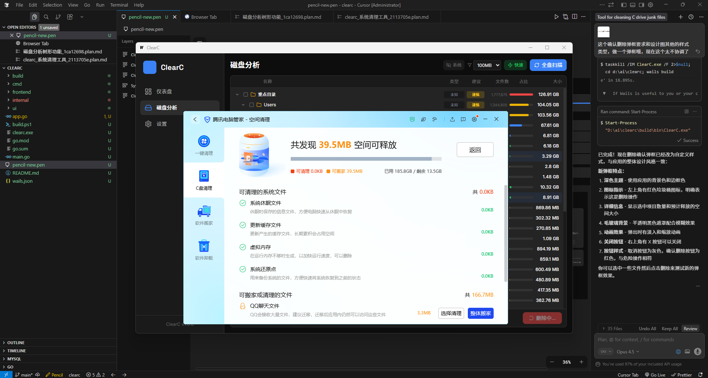
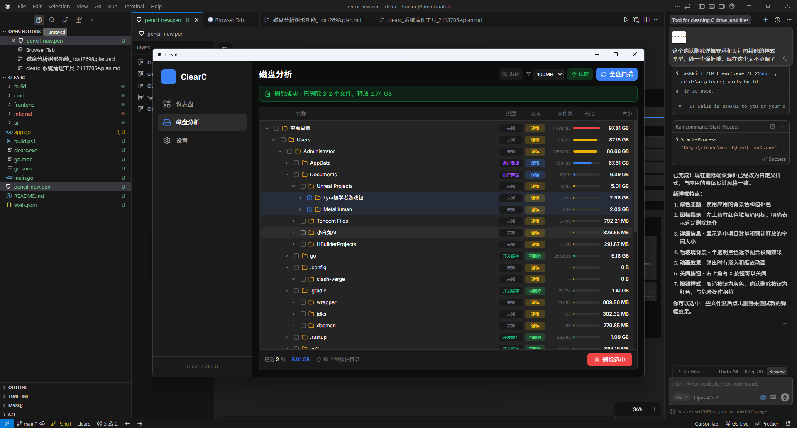
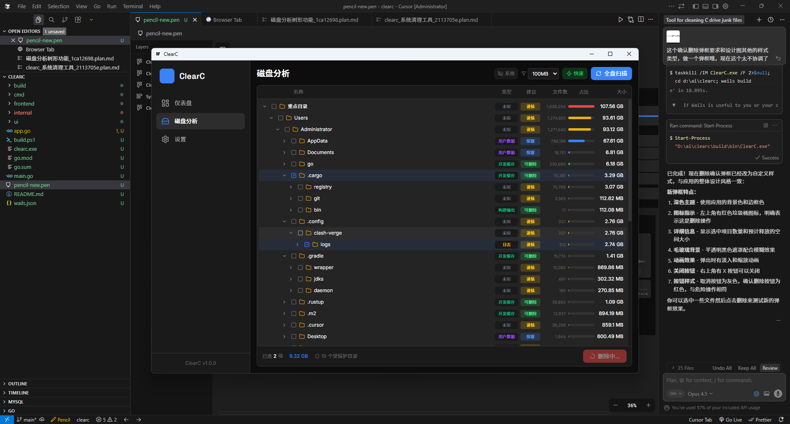
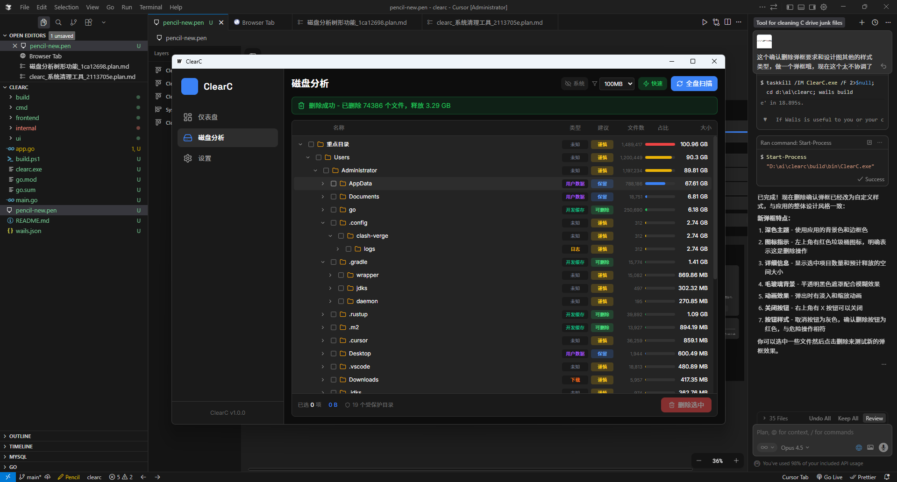
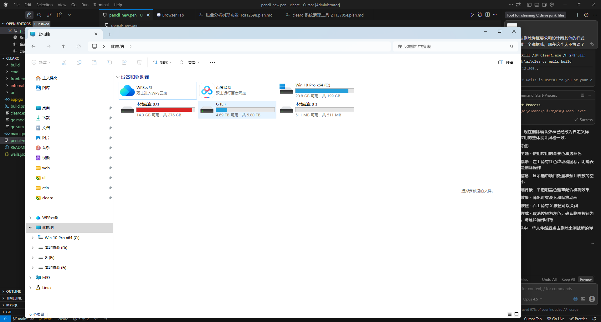
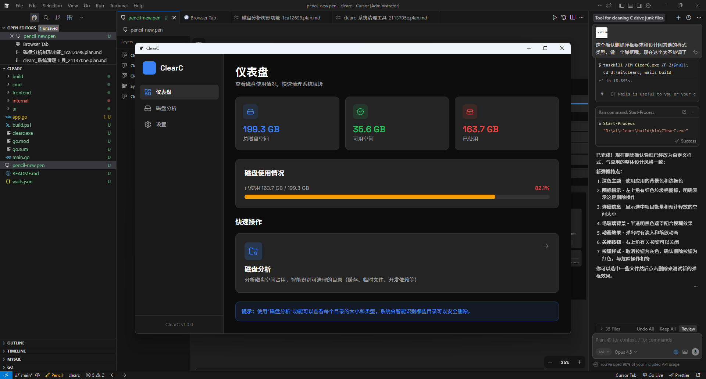

ClearC is a powerful cross-platform tool designed for developers.
Quickly analyze disk usage and clean up development junk files.

System cleanup tools only free 39.5MB. C: drive still shows critical red status

ClearC reveals forgotten project folders taking up massive disk space

Automatically marks logs and cache files that are safe to delete

Select files and clean with one click. Instantly free 3.29GB of space

After cleanup, C: drive status changes from critical red to healthy blue

Dashboard shows 163.7GB used, 35.6GB free. System runs smoother
Built for developers who care about disk space
Visualize disk space usage with an intuitive tree view. Find large files and folders instantly.
Automatically detect and clean node_modules, Go cache, Python cache, Rust target, and more.
System directories are protected by default. Clear recommendations help you make safe decisions.
Pay once, use forever. No subscriptions.
Try all features free for 10 days
One-time payment, lifetime access
ClearC targets development cache files like node_modules, Go module cache, Python __pycache__, Rust target directories, and other temporary build artifacts.
Yes! ClearC only targets regenerable cache and build files. Your source code and important data are protected. You can always rebuild these files when needed.
After the trial, you can purchase a lifetime VIP license for just ¥5. This is a one-time payment that unlocks all features forever, including future updates.
Yes! ClearC is built with cross-platform support. It runs natively on Windows, macOS (Intel and Apple Silicon), and Linux.
Download ClearC now and start cleaning in seconds.